Jelaskan deskripsi dan ruang lingkup fitur aplikasi Desktop Rich UI yang dibuat.
Aplikasi yang dibangun bernama Bank Soal .NET, yaitu sebuah sistem pembelajaran, katalog bank soal kurikulum, modul studi kasus, dan evaluasi ujian interaktif berbasis Desktop Rich UI yang dikembangkan menggunakan framework Windows Presentation Foundation (WPF) pada ekosistem .NET 8 (C# 12).
Predikat Rich UI (Rich User Interface) pada aplikasi ini diwujudkan melalui:
#0F172A dan #1E293B dengan aksen ungu #7C3AED) yang dirancang menggunakan Material Design in XAML Toolkit untuk meminimalkan kelelahan mata saat belajar dalam durasi lama.async/await), sehingga UI desktop tetap mulus dan responsif tanpa fenomena freezing.Satu pintu masuk (Unified Login) untuk Mahasiswa dan Dosen/Admin dengan deteksi peran otomatis, fitur pendaftaran akun baru dengan validasi data, serta tombol Quick-Fill Demo instan.
CRUD Master Data Mata Kuliah (Kode, Nama, SKS, Semester, Ikon Material, dan Warna) serta pengelolaan Materi Pembelajaran per pertemuan terelasi secara relasional.
Pengelolaan bank soal fleksibel mendukung tipe Pilihan Ganda (4 opsi jawaban) dan Essay (pembahasan detail serta kata kunci evaluasi otomatis).
Penyajian kumpulan soal untuk studi mandiri dengan filter multi-kriteria dan fitur sakelar Kunci Jawaban: ON / OFF yang langsung menyorot opsi benar dan kunci resmi.
Pembaca dokumen PDF terintegrasi penuh di dalam window aplikasi tanpa browser luar untuk membaca kisi-kisi dan silabus, lengkap dengan fitur upload berkas PDF.
Mahasiswa dapat membaca materi secara mandiri dan mengerjakan simulasi ujian dengan timer serta mesin penilaian otomatis (auto-grading) langsung.
Pencatatan riwayat skor mandiri bagi mahasiswa serta halaman rekapitulasi nilai seluruh mahasiswa bagi Dosen/Admin untuk monitoring performa akademik.
Menggunakan SQLite via Entity Framework Core 8 yang tertanam langsung (in-process) dengan skema relasional tabel terstruktur tanpa instalasi server SQL eksternal.
Apa latar belakang dan Manfaat aplikasi tersebut di buat.
Pengembangan aplikasi Bank Soal .NET dilatarbelakangi oleh sejumlah tantangan nyata dalam proses pembelajaran mata kuliah Pemrograman Berbasis Kerangka Kerja (PBKK):
| Penerima Manfaat | Manfaat yang Diperoleh |
|---|---|
| Bagi Mahasiswa |
|
| Bagi Dosen / Pengajar |
|
| Bagi Praktik Akademik PBKK |
|
Seluruh logika bisnis, manajemen data transaksional, validasi formulir, perancangan antarmuka visual XAML, serta mesin penilaian otomatis dibangun secara mandiri dengan spesifikasi teknologi sebagai berikut:
| Komponen / Lapisan | Teknologi / Pustaka | Peran & Tanggung Jawab |
|---|---|---|
| User Interface (UI) | XAML + Material Design 5.1 | Tata letak responsif, palet Dark Theme slate modern, ikon vektor, animasi transisi, dan visualisasi interaktif. |
| Application Logic | C# 12 (.NET 8 SDK) | Pemrosesan autentikasi, routing window/view, validasi input formulir, dan mesin penilaian otomatis (auto-grading). |
| Data Persistence | SQLite via EF Core 8 | Penyimpanan terstruktur tanpa instalasi server terpisah (serverless), migrasi skema dinamis, dan kueri LINQ berkecepatan tinggi. |
| PDF Viewer Engine | Microsoft WebView2 | Merender berkas PDF modul, silabus, dan kisi-kisi soal langsung di dalam aplikasi dengan kontrol zoom, scroll, dan navigasi halaman penuh. |
Sistem autentikasi menerapkan konsep Unified Authentication Portal. Pengguna Mahasiswa maupun Dosen/Admin masuk melalui satu jendela login yang sama. Saat proses login berhasil, sistem secara otomatis membaca atribut Role dari akun tersebut dan mengarahkan ke antarmuka yang sesuai. Terdapat pula tombol Quick-Fill Demo untuk mempermudah pengujian dosen penguji.
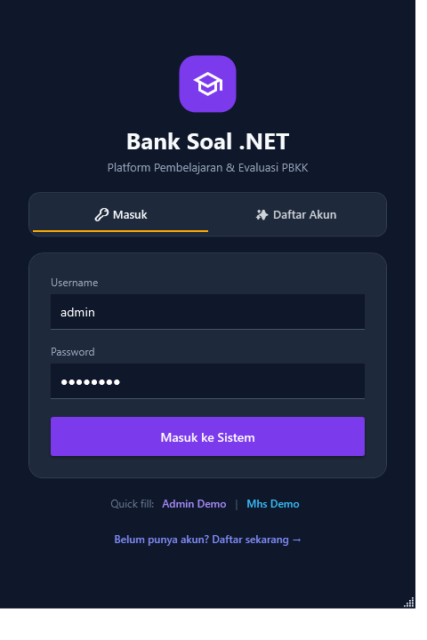
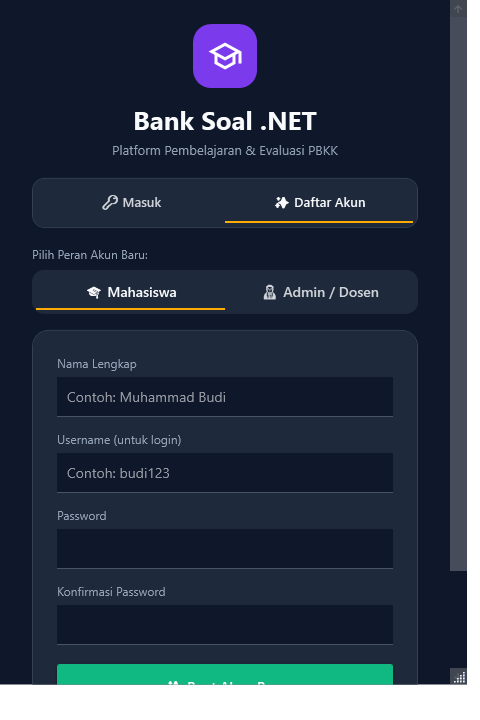
// Method autentikasi pada DatabaseService.cs
public async Task<User?> LoginAsync(string username, string password)
{
// Verifikasi keberadaan akun berdasarkan username dan password
var user = await _db.Users.FirstOrDefaultAsync(u =>
u.Username.ToLower() == username.ToLower() &&
u.Password == password);
return user;
}
// Handler tombol masuk pada LoginWindow.xaml.cs
private async void BtnLogin_Click(object sender, RoutedEventArgs e)
{
string username = TxtUsername.Text.Trim();
string password = TxtPassword.Password;
var user = await _db.LoginAsync(username, password);
if (user == null)
{
TxtError.Text = "Username atau password salah.";
TxtError.Visibility = Visibility.Visible;
return;
}
// Navigasi ke jendela kerja utama berdasarkan Role
var shell = new MainShell(user, _db);
shell.Show();
this.Close();
}
Proses pengecekan dilakukan secara asinkron (async/await) agar UI tidak mengalami freeze saat mengakses basis data SQLite.
Jendela utama (MainShell.xaml) bertindak sebagai kontainer induk (shell). Bilah samping (Sidebar) secara dinamis menampilkan menu navigasi sesuai peran pengguna yang sedang aktif:
// SetupUI pada MainShell.xaml.cs
private void SetupUI()
{
TxtNamaUser.Text = _user.NamaLengkap;
TxtUsername.Text = $"@{_user.Username}";
TxtAvatarInitials.Text = string.IsNullOrEmpty(_user.NamaLengkap)
? "U" : _user.NamaLengkap.Substring(0, 2).ToUpper();
if (_user.Role.ToLower() == "admin")
{
TxtRoleBadge.Text = "ROLE: ADMIN";
MenuAdmin.Visibility = Visibility.Visible;
MenuMahasiswa.Visibility = Visibility.Collapsed;
NavAdminDashboard_Click(this, new RoutedEventArgs());
}
else
{
TxtRoleBadge.Text = "ROLE: MAHASISWA";
MenuAdmin.Visibility = Visibility.Collapsed;
MenuMahasiswa.Visibility = Visibility.Visible;
NavModeBelajar_Click(this, new RoutedEventArgs());
}
}Halaman Dashboard menyajikan metrik statistik operasional sistem secara real-time, meliputi jumlah Mata Kuliah terdaftar, total Modul Materi, total Soal Pilihan Ganda, Soal Essay, serta total sesi Ujian Mahasiswa yang telah diselesaikan.
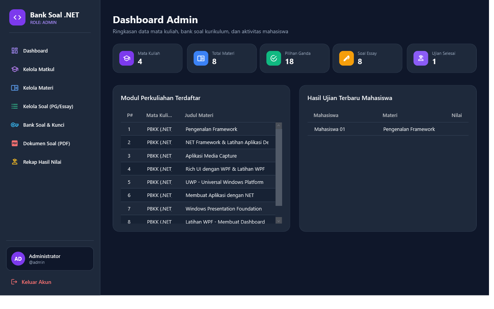
// Mengumpulkan data ringkasan di AdminDashboardView.xaml.cs
public async void LoadData()
{
var stats = await _db.GetDashboardStatsAsync();
TxtTotalMatkul.Text = stats.TotalMatkul.ToString();
TxtTotalMateri.Text = stats.TotalMateri.ToString();
TxtTotalSoalPg.Text = stats.TotalSoalPg.ToString();
TxtTotalSoalEssay.Text = stats.TotalSoalEssay.ToString();
TxtTotalUjian.Text = stats.TotalUjianSelesai.ToString();
// Memuat daftar modul perkuliahan dan hasil ujian terbaru
DgModulKuliah.ItemsSource = await _db.GetAllMateriWithMatkulAsync();
DgHasilTerbaru.ItemsSource = await _db.GetRecentExamResultsAsync(5);
}Modul ini memungkinkan Dosen/Admin untuk mengelola data master kurikulum secara mandiri. Dosen dapat menambah mata kuliah baru lengkap dengan bobot SKS, semester, ikon representatif, dan warna aksen kartu, serta mengelompokkan materi pembelajaran per pertemuan ke mata kuliah terkait.
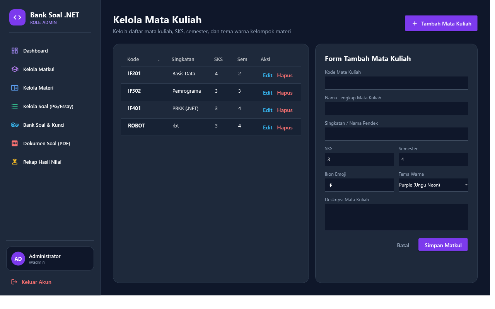
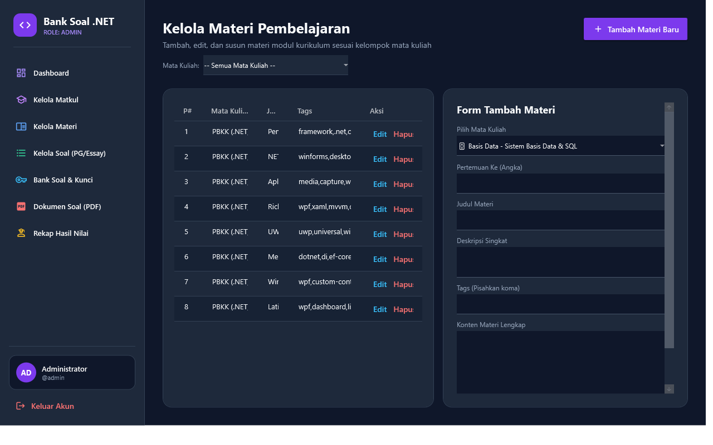
// Models/Materi.cs
public class Materi
{
public int Id { get; set; }
public int MataKuliahId { get; set; }
public int PertemuanKe { get; set; }
public string Judul { get; set; } = string.Empty;
public string Deskripsi { get; set; } = string.Empty;
public string IsiMateri { get; set; } = string.Empty;
// Relasi navigasi ke MataKuliah induk
public virtual MataKuliah? MataKuliah { get; set; }
}Dosen/Admin dapat membuat butir soal evaluasi dengan tipe Pilihan Ganda (dilengkapi 4 opsi jawaban dan deklarasi kunci jawaban) atau tipe Essay (dilengkapi kunci jawaban pembahasan dan kata kunci penilaian otomatis).
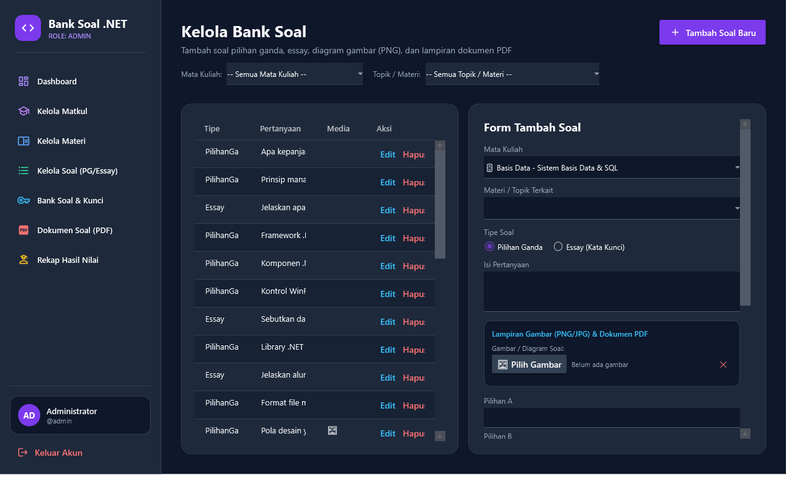
private async void BtnSimpanSoal_Click(object sender, RoutedEventArgs e)
{
var soal = new Soal
{
MateriId = selectedMateriId,
TipeSoal = CbTipeSoal.SelectedIndex == 0 ? "PG" : "Essay",
Pertanyaan = TxtPertanyaan.Text.Trim(),
PilihanA = TxtPilihanA.Text.Trim(),
PilihanB = TxtPilihanB.Text.Trim(),
PilihanC = TxtPilihanC.Text.Trim(),
PilihanD = TxtPilihanD.Text.Trim(),
KunciJawaban = GetSelectedKunci(),
Pembahasan = TxtPembahasan.Text.Trim()
};
await _db.AddSoalAsync(soal);
MessageBox.Show("Butir soal berhasil ditambahkan ke bank soal!",
"Informasi", MessageBoxButton.OK, MessageBoxImage.Information);
LoadDataSoal();
}Modul ini berfungsi sebagai repositori studi mandiri bagi Mahasiswa dan Dosen. Soal-soal ditampilkan dalam kartu interaktif yang dilengkapi tombol toggle Kunci Jawaban: ON / OFF. Saat aktif, opsi yang benar akan disorot warna hijau dengan penanda ✓ KUNCI beserta penjelasan materi.
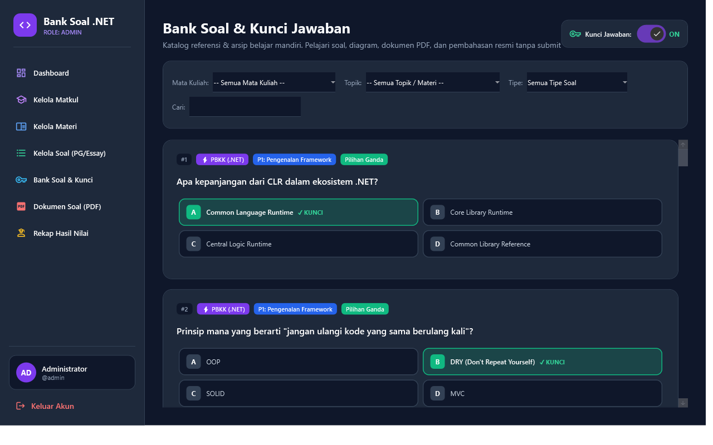
// Penyaringan soal berdasarkan Mata Kuliah, Topik, Tipe, dan Keyword
private void ApplyFilter()
{
var query = _allSoalList.AsEnumerable();
if (_selectedMatkulId > 0)
query = query.Where(s => s.Materi?.MataKuliahId == _selectedMatkulId);
if (_selectedMateriId > 0)
query = query.Where(s => s.MateriId == _selectedMateriId);
if (!string.IsNullOrWhiteSpace(searchKeyword))
query = query.Where(s => s.Pertanyaan.Contains(searchKeyword, StringComparison.OrdinalIgnoreCase));
IcSoalList.ItemsSource = query.ToList();
}Aplikasi menyediakan pembaca dokumen berkas PDF (kisi-kisi ujian, silabus kurikulum, lembar studi kasus) langsung di dalam window aplikasi tanpa memerlukan software penampil eksternal seperti Adobe Reader atau browser luar. Pengguna dapat membaca dokumen dengan fitur zoom, navigasi halaman, dan pencarian teks secara mulus.
// Inisialisasi WebView2 kontrol di DokumenPdfView.xaml.cs
private async Task RenderPdfDocument(string filePath)
{
if (!File.Exists(filePath)) return;
// Menunggu CoreWebView2 runtime siap
await PdfWebView.EnsureCoreWebView2Async();
// Membuka URI berkas lokal langsung ke engine Chromium WebView2
var fileUri = new Uri(filePath).AbsoluteUri;
PdfWebView.CoreWebView2.Navigate(fileUri);
}Mahasiswa disuguhkan dua metode belajar mandiri:
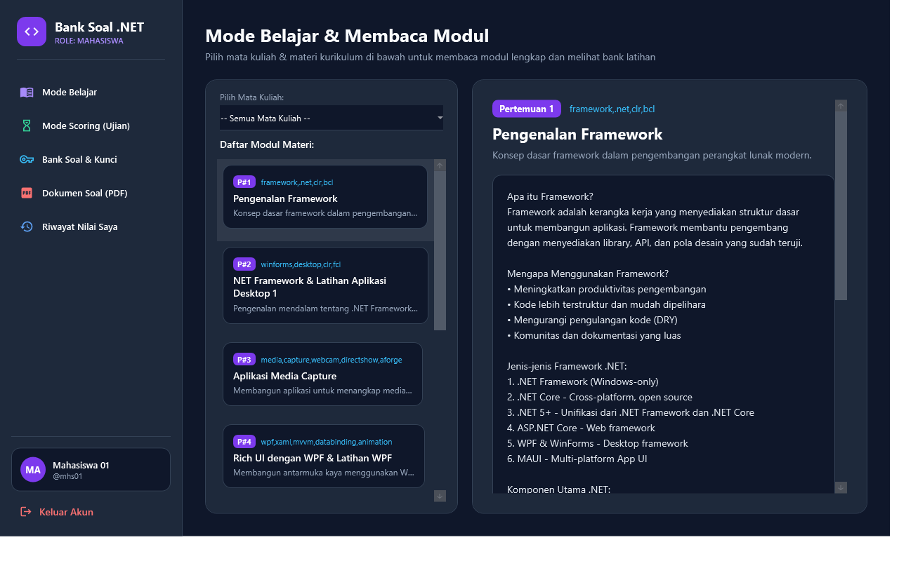
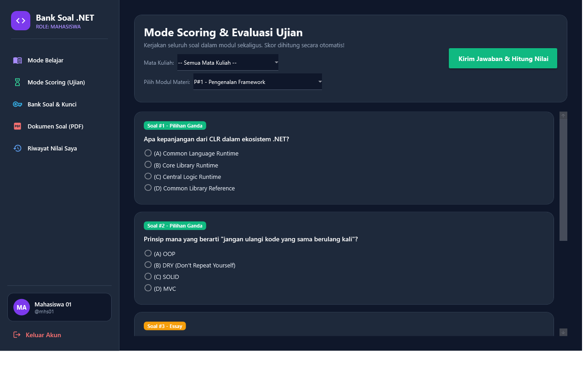
// Perhitungan nilai pada ModeScoringView.xaml.cs
private async void BtnSubmitUjian_Click(object sender, RoutedEventArgs e)
{
int totalSoal = _listSoal.Count;
int benarPg = 0;
int totalBobotEssay = 0;
foreach (var soal in _listSoal)
{
if (soal.TipeSoal == "PG")
{
if (_jawabanMahasiswa[soal.Id] == soal.KunciJawaban)
benarPg++;
}
else if (soal.TipeSoal == "Essay")
{
// Pencocokan kata kunci esensial jawaban mahasiswa
string text = _jawabanEssay[soal.Id].ToLower();
string[] keywords = soal.KunciJawaban.ToLower().Split(' ');
int matches = keywords.Count(k => text.Contains(k));
if (matches >= (keywords.Length / 2))
totalBobotEssay += 1;
}
}
double skorAkhir = ((double)(benarPg + totalBobotEssay) / totalSoal) * 100.0;
// Simpan ke riwayat hasil ujian SQLite
var hasil = new HasilUjian
{
UserId = _currentUser.Id,
MateriId = _selectedMateriId,
Nilai = Math.Round(skorAkhir, 2),
TanggalUjian = DateTime.Now
};
await _db.SimpanHasilUjianAsync(hasil);
MessageBox.Show($"Ujian Selesai! Skor Anda: {hasil.Nilai}", "Hasil Evaluasi");
}
Seluruh data hasil evaluasi dicatat secara permanen di dalam tabel HasilUjians di basis data SQLite. Mahasiswa dapat melihat histori perkembangan belajarnya, sedangkan Dosen/Admin memiliki akses rekapitulasi nilai seluruh mahasiswa untuk keperluan monitoring perkuliahan.
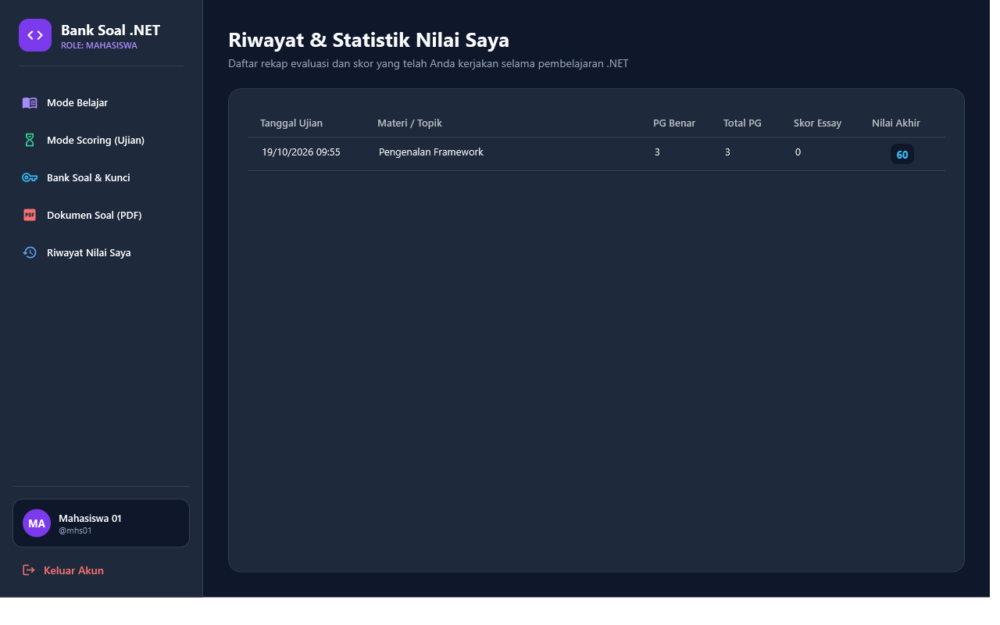
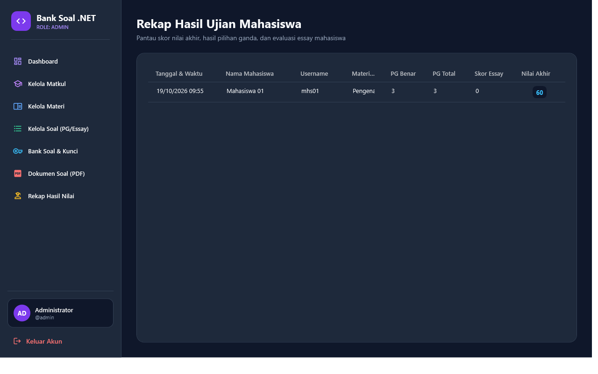
Proyek Bank Soal .NET telah berhasil mengintegrasikan seluruh konsep pemrograman desktop modern berbasis framework .NET 8 WPF: